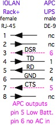

|
|
|
www.conserver.com |
|
|
|
www.conserver.com |
I've been a happy UPS user for many, many years now, both at home and at work. I learned from the mistakes of others, and I've got a collection of UPSs protecting my home equipment, and the Console Lab. While I've worked with a few different vendors, I've got a preference for the units from American Power Conversion (APC), because many units have serial ports and they can report about the condition of the power coming into the UPS. I find this information invaluable, but the APC serial interface is NOT directly (i.e. 'pin-for-pin') compatible with the 'de-facto' DE-9 RS-232 serial interface. This page is intended to share information I have found about the APC interface, and to explain how to connect this useful interface to your console servers. (I've also used the SNMP modules for the SmartSlot interfaces on older Matrix series units, but this page will not cover the use of SNMP over Ethernet conenctions.)
The signals for the APC SmartUPS series UPSs is shown at the right. You probably noticed first that there are no handshaking and flow control leads. You probably presumed that the ground and data leads were on the 'normal' pins. Surprise! Notice the other, non-data pins again... the Low Battery and the No AC Input output signals could be used to drive an alarm system, and you could wire your own 'Big Red Switch' if you like, using the Power Off command input signal. (Or even a 'Big Green Switch', but that's outside the scope of this page.) In short, you only need a 3-wire connection between the APC UPS console; transmit and receive data and ground only. |
APC supplies a special serial cable with each UPS that has a serial console, because their interface doesn't match the de-facto standard initially used on the old IBM PC-AT. I recommend that you mark the cable, and hang onto it.
|
If you use either a 'straight-through', or a 'null-modem' DE-9 cable to connect an APC UPS to a 'normal' DE-9 interface, the UPS will see signals from the attached device. This is why you need a specialty cable or adapter. In the case of the DTE cable (at right), the TD signal from the attached devices will cause the APC to shut off power to the UPS outlets immediately, and you won't be able to command it on with the front panel switches, until you disconnect the cable from the UPS or the host. |
If you want to connect the UPS to a console server, I'd suggest making a special adapter to connect with your particular console server RJ-45 wiring scheme.
While you could make a specialty cable to go directly from your console server to the UPS, my suggestion is to make an RJ45-to-DE9 adapter. While you can argue that adding an adapter to the chain will add one more possible point of failure (for communications between the UPS and the console server), I'll counter with these points;
In the end, the decision is yours. My diagrams show an RJ45 female connection for building the adapter. You can use the same pinouts and use an RJ45 male if you are going to make a direct cable. (If you choose to make a cable, I suggest using an 8-wire cable, so that the RJ45 male slug will hold the cable securely, and cut the unused leads at the DE-9 end of the cable.)
For a console connection (two-way data), you only need to connect the signals shown as solid black lines. (And "nc" stands for "No Connection", so no pin number is given.) The pink dashed lines on the APC UPS output leads are only needed if you are going to try to use the flow control and handshaking inputs of the console server to track these signals.
Make Sure You LABEL Your Adapter (or cable), so others will know which RJ45 wiring scheme is in use! The Brother label maker folks has some "strong adhesive" versions of their TZ-style label tapes, and they are excelent for this purpose.
|  |
The Internet is a 'fluid' place, and I don't knnow how long each of the URLs below will last. I've included summary information for each link, so you can try to search for the pages if the link(s) seem broken.
There is an application, for use with Linux OS machines, called apcupsd, and the project had pointers to some useful How-To pages which have evolved into a good on-line manual, including pointers to cabling information, and a useful demo page. Their testing apcupsd page also has some useful colues to make sure your second-hand UPS is configured properly.
Remember, if you are testing your UPS, you want the computer/device you are controlling/monitoring from to be on independent power, so you don't shut off your monitor accidentally!
The apcupsd on-line manual has a section that explains which UPS types use the APC Smart protocol, and the APC smart protocol page has clues for the serial communications itself, for the application-side hackers.
The Redhack.org site has a few older pages that discuss the APC cabling (deep link)for various APC UPSs, in relation to early versions of apcupsd.
There is also a useful pinouts page in russia (pinouts.ru) with a UPS section that includes APC (Smart and dumb) as well as other vendor's devices. (I was cautious about visiting the site, but I've used it a number of times now with no malware troubles. Use caution anyway...always practice safe hex.)
Besides searching for apcupsd serial cable, you can also look for information under NUT (for 'Network UPS Tools') which are available for a few Linux OSs. I found a basic page about using NUT with an APC UPS on engadget
(As a Best Practice, always ensure that your physical link is in place before you waste time on serial port settins. )
I've run into a few APC UPS ports. They've responded at 2400-8-N-1, but not at 9600 bps. I've found articles that say to try 19,200 bps, but I haven't found any that respond at that speed. I agree that my sample set is relatively small, and my not be representative of the majority of APC serial ports deployed to date, but it is my only experience so far.
By all means, if 2400 8N1 doesn't seem to work for you, try other settings. (After you have made sure that your physical link is correct and connected!)
Now that you have a User Name: prompt, try the default apc (with the default password of apc.
Jon Steiger has a good web page for the APC SNMP module, which mentions some different serial speed possibilities, and also discusses APC's password recovery process.
Jeff Liebermann posted some ASCII art cable diagrams, and mentions that some APC SNMP adapters will let you change the serial port speed, but the default is 2400 bps.
These signals are derived from my testing of an APC model AP7868 smart PDU. I was able to make a 3-wire connection to a Lantronix ETS32PTR terminal server. There is a small voltage present on the RJ-13 pins 1 and 6. I'm not sure if it is the same voltage bus (maybe just for a pull-up signal?). |
As you can see, there are tidbits of information, and some of it is conflicting. Unfortunately, this page will only add to the mix. Since I didn't find a single 940-0144A cable around a 120-plus PDU installation, I cannot confirm the pinouts shown in these other (offsite) links. However, I will comment on some of the inconsistencies that led me to my experiment;
Armed with enough examples to have a starting point (yes - it is RS-232, there are two possible Ground pins), I then took out my DVM (digital voltmeter) and my Siemon MODAPT, to try to verify signals, and reconcile the differences that I'd read about, using one of our APC model AP7868 PDUs. Here's what I found;
I still need to try to determine if the Ground on RJ-14 Pin 2 is the same as Pin 5. (That is, zero-ohm continuity,
or some other resistance/impedance.) I also don't know whether tying RJ-14 Pin 1 and Pin 6 together accomplishes
any electrical/logical changes. For now, letting both Pin 1 and Pin 6 float (no connection) has not made a measurable
difference for an RS-232 connection. This has been tested with the AP7868 rPDU, and I'll have an AP7900 to test soon. |
(Lantronix Users can use the Cisco Console adapters. So can Opengear users, if your device uses the Cisco wiring schema.)
  |
  |
|
NOTICE: Most of the pages, articles, and tutorials on this website are copyrighted works. You may make 'deep links' to various pages. (If you let me know which page(s) you are linking to, I'll let you know if I move the page(s) during updates.) Please send me email if you wish to republish any material, or use it on your own website. |